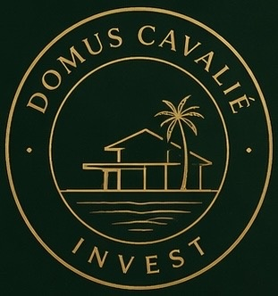

Valorisez votre réseau en proposant à vos contacts un investissement immobilier accompagné de A à Z, aux côtés d'un opérateur reconnu et implanté localement.
Investir à Bali fait rêver. Mais à 12 000 kilomètres de chez soi, dans un cadre juridique et fiscal que l'on ne maîtrise pas, le rêve ne tient que sur une chose : la qualité des personnes qui vous accompagnent.
C'est précisément le rôle que j'ai choisi. Installé sur place, j'accompagne une clientèle francophone dans la conception et la réalisation de son projet immobilier à Bali — de la définition de la stratégie patrimoniale jusqu'à la livraison de la villa et sa mise en exploitation locative.
Je ne travaille pas seul. Je m'appuie sur Balimmo, l'un des acteurs de référence de l'investissement, de la construction et de la gestion locative pour les investisseurs francophones à Bali. Une équipe de spécialistes présents localement : juristes, architectes, conducteurs de travaux, gestionnaires locatifs.
Aujourd'hui, j'ouvre cet accompagnement à des partenaires professionnels. Ce document vous explique, en quelques minutes, comment votre réseau peut devenir une source de revenus complémentaires — sans changer de métier, sans prendre le moindre risque opérationnel, et en offrant à vos contacts un niveau de service dont vous serez fier.
Un agent commercial présente un produit. Un conseiller construit une stratégie, choisit les bons interlocuteurs, contrôle l'exécution et rend des comptes. C'est la différence que vos contacts ressentiront dès le premier rendez-vous.
Présent à Bali, je connais les quartiers, les typologies de biens, les niveaux de prix réels et les opérateurs sérieux. Un investisseur à distance ne peut pas obtenir cette lecture du marché depuis la France.
Objectifs patrimoniaux, horizon de détention, budget, fiscalité, usage personnel ou pur rendement : la stratégie est définie avant de parler du moindre bien. Aucun projet standard, aucune vente forcée.
Structuration juridique, sécurisation du foncier, suivi de construction, ameublement, mise en location et reporting : un seul interlocuteur du premier échange jusqu'aux premiers revenus locatifs.
La solidité d'un projet à l'étranger tient à la solidité de l'opérateur qui l'exécute. Je travaille en collaboration avec Balimmo, l'un des acteurs de référence de l'investissement, de la construction et de la gestion locative pour les investisseurs francophones à Bali.
Sélection et sourcing des opportunités, analyse de rentabilité, montage juridique adapté au droit indonésien.
Conception architecturale, maîtrise d'œuvre et suivi de chantier par des équipes présentes sur place.
Mise en exploitation, commercialisation, entretien, comptabilité et reporting propriétaire.
Six étapes, un seul interlocuteur. Voici très exactement ce que vivra la personne que vous m'aurez présentée.
Entretien approfondi : objectifs, budget, horizon, fiscalité, usage envisagé. Aucune proposition avant d'avoir compris le projet.
Présentation de projets correspondant réellement à la stratégie définie, avec analyse de rentabilité et scénarios chiffrés.
Vérification du foncier et des autorisations, choix de la structure de détention, contrats revus par des juristes locaux.
Conception, appels de fonds échelonnés, reporting régulier et photos d'avancement : l'investisseur suit son projet à distance, en confiance.
Réception de la villa, décoration et équipement pensés pour la performance locative.
Commercialisation, gestion locative quotidienne, entretien et reporting propriétaire. Le bien travaille, l'investisseur profite.
Bali n'est pas une promesse à construire : c'est une destination que vos contacts connaissent déjà. Cela rend la conversation naturelle — et l'introduction évidente.
Le principe est simple : vous me présentez une personne de votre entourage professionnel ou personnel intéressée par un investissement à Bali. Je prends le relais et l'accompagne jusqu'au bout. Si le projet aboutit, vous êtes rémunéré.
Vous n'avez ni à conseiller, ni à chiffrer, ni à vendre. Vous introduisez, je fais le reste.
Pas de droit d'entrée, pas d'objectif imposé, pas d'exclusivité. Votre activité principale reste la vôtre.
Vos contacts sont pris en charge avec exigence. Votre recommandation vous valorise.
Chaque projet abouti donne lieu au versement d'une commission d'apport, définie contractuellement avant toute mise en relation. Les montants en jeu sur ce type d'opération font qu'une seule introduction réussie peut représenter une rémunération significative.
Le montant ou le pourcentage de votre commission est connu et écrit dès le départ. Aucune renégociation en cours de route.
Un contrat d'apporteur d'affaires encadre la relation : mise en relation, exclusivité de l'apport, durée, modalités de versement.
Aucune limite de nombre de dossiers. Les partenaires les plus actifs accèdent à des conditions renforcées.
Les conditions précises de rémunération (assiette, taux ou forfait, calendrier de versement) sont détaillées dans le contrat d'apporteur d'affaires signé avant toute mise en relation. Les revenus perçus dépendent des projets effectivement conclus et ne peuvent faire l'objet d'aucune garantie.
Un appel de trente minutes pour comprendre votre activité, votre réseau et valider ensemble que le programme a du sens pour vous.
Signature du contrat d'apporteur d'affaires et remise de votre kit partenaire : plaquette, vidéos, argumentaire, questions fréquentes.
Un message, un appel, une mise en relation par e-mail. Votre rôle s'arrête ici : je prends le relais sous 24 à 48 heures.
Le projet est accompagné jusqu'à sa conclusion. Votre commission est versée selon les modalités prévues au contrat.
Le meilleur moyen de savoir si ce programme est fait pour vous est d'en discuter de vive voix. Nous verrons ensemble votre réseau, vos contraintes et les conditions de partenariat qui vous correspondent — sans engagement.
Document à caractère informatif, non contractuel. Domus Cavalié Invest intervient en qualité de conseil et d'intermédiaire en relation avec ses partenaires opérateurs. Tout investissement immobilier comporte des risques, notamment de perte en capital, d'illiquidité et de change ; les performances locatives ne sont pas garanties.